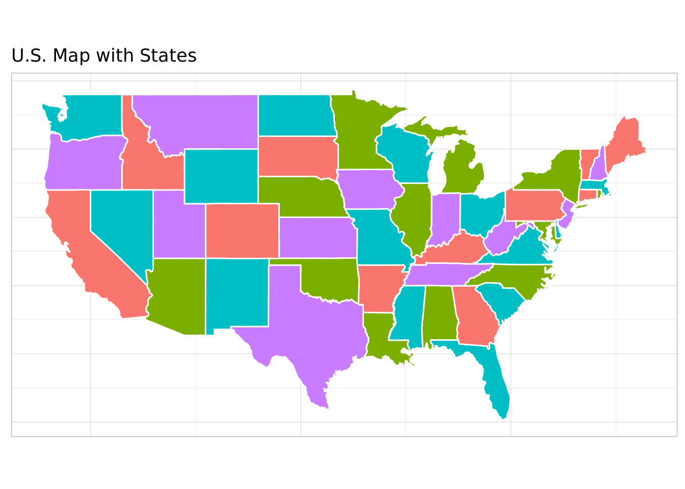

Code
# load libraries and source functions
library(dplyr)
library(glue)
library(ompr)
library(ompr.roi)
library(highs)
library(purrr)
library(ggplot2)
library(maps)
library(mapdata)
source("ompr_helperfns.R")
theme_set(theme_light())Vertex coloring problem in a graph is to find the minimum number of colors such that no two connected vertices have the same color. A special case is map coloring problem where the vertices are states/countries in a map and edges are pairs of states/countries that are adjacent to each other. Here we illustrate the map coloring problem with OMPR modeling language and HiGHS solver. Specifically, we want to find the minimum number of colors and the color of each state in US so that no two adjacent states have the same color. Only portions of R code are shown here. The .qmd file is in this location
# load libraries and source functions
library(dplyr)
library(glue)
library(ompr)
library(ompr.roi)
library(highs)
library(purrr)
library(ggplot2)
library(maps)
library(mapdata)
source("ompr_helperfns.R")
theme_set(theme_light())We use the state adjacency data from Gregg Lind’s site and process it in a format that we can use for OMPR model.
#
# US states adjacency data from
# https://writeonly.wordpress.com/2009/03/20/adjacency-list-of-states-of-the-united-states-us/
#
x = readLines("data/US_state_adjacency.txt")
edgelist = list()
e = 0
for (i in 1:length(x)) {
stloc = strsplit(x[i], ",")[[1]]
ns = length(stloc)
if(ns > 1) {
for (i in 2:ns) {
e = e + 1
edgelist[[e]] = c(stloc[1], stloc[i])
}
}
}
edge_df = as.data.frame(do.call(rbind, edgelist))
names(edge_df) = c("from", "to")
nodes_df = bind_rows(edge_df %>% distinct(from) %>% rename(state = from),
edge_df %>% distinct(to) %>% rename(state = to)) %>% distinct(state)
nodes_df = nodes_df %>% mutate(id = seq(1, nrow(nodes_df)))
edge_df = inner_join(edge_df, nodes_df %>% rename(from = state), by = "from") %>% rename(fromid = id)
edge_df = inner_join(edge_df, nodes_df %>% rename(to = state), by = "to") %>% rename(toid = id)
edge_df = edge_df %>% filter(fromid < toid)There are many mathematical formulations of this problem. We use a basic formulation for the example here.
\[ \begin{array}{llr} \min & \sum_{c=1}^Cy_c & (a)\\ & \sum_{c=1}^Cx_{ic} = 1, \;i=1,2,\ldots,N & (b)\\ & x_{ic} + x_{jc} \leq y_c, \; \mbox{when }i, j \mbox{ are adjacent} & (c)\\ & x_{ic} \; binary \\ & y_c \; binary \end{array} \]
where:
# OMPR model
ns = nrow(nodes_df)
nc = 4
edge_str = edge_df %>% mutate(edge_str = glue("{fromid}_{toid}")) %>% pull(edge_str)
mdl = MIPModel()
mdl = mdl %>% add_variable(x[i, c], i = 1:ns, c = 1:nc, type = "integer", lb = 0, ub = 1)
mdl = mdl %>% add_variable(y[c], c = 1:nc, type = "integer", lb = 0, ub = 1)
mdl = mdl %>% set_objective(sum_over(y[c], c=1:nc))
mdl = mdl %>% add_constraint(sum_over(x[i, c], c = 1:nc) == 1, i = 1:ns)
mdl = mdl %>% add_constraint(x[i, c] + x[j, c] <= y[c], i = 1:ns, j = 1:ns, c = 1:nc, glue("{i}_{j}") %in% edge_str)Converting the OMPR model to HiGHS model and solving shows that 4 colors are sufficient to color the US map (Hawaii and Alaska are excluded).
# convert to highs model and solve
highs_mdl = as_highs_model(mdl)
s <- highs_solve(L = as.numeric(highs_mdl$L), lower = highs_mdl$lower, upper = highs_mdl$upper,
A = highs_mdl$A, lhs = highs_mdl$lhs, rhs = highs_mdl$rhs, types = highs_mdl$types,
offset = highs_mdl$offset)
sol_status = s[["status"]]
zobj = s[["objective_value"]]
xsol = s[["primal_solution"]]
names(xsol) = variable_keys(mdl)# get solution
soldf = tibble(var = names(xsol), val = xsol)
parse_xvar = function(varname) {
vsplit1 = strsplit(varname, "\\[")[[1]]
vsplit2 = strsplit(gsub("\\]", "", vsplit1[2]), ",")[[1]]
id = as.numeric(vsplit2[1])
colid = as.numeric(vsplit2[2])
return(c(id, colid))
}
soldf = soldf %>% filter(grepl("x", var)) %>% filter(val == 1)
soldf = soldf %>% mutate(id = map_dbl(var, function(x) parse_xvar(x)[1]),
colid = map_dbl(var, function(x) parse_xvar(x)[2]))
soldf = inner_join(soldf, nodes_df, by = "id")
colmap = c("1" = "red", "2" = "blue", "3" = "green", "4" = "yellow")
soldf = soldf %>% mutate(stcol = colmap[colid])The solution is visualized in a map using code from this location
#
# https://jtr13.github.io/cc19/different-ways-of-plotting-u-s-map-in-r.html
#
state <- map_data("state")
state_name_abb = tibble(stname = tolower(state.name), stabb = state.abb)
state = inner_join(state, state_name_abb %>% rename(region = stname), by = "region")
state = inner_join(state, soldf %>% select(state, stcol) %>% rename(stabb = state), by = "stabb")
ggplot(data=state, aes(x=long, y=lat, fill=stcol, group=group)) +
geom_polygon(color = "white") +
guides(fill="none") +
theme(axis.title.x=element_blank(), axis.text.x=element_blank(), axis.ticks.x=element_blank(),
axis.title.y=element_blank(), axis.text.y=element_blank(), axis.ticks.y=element_blank()) +
ggtitle('U.S. Map with States') +
coord_fixed(1.3)
sessionInfo()R version 3.6.3 (2020-02-29)
Platform: x86_64-pc-linux-gnu (64-bit)
Running under: Ubuntu 20.04.3 LTS
Matrix products: default
BLAS: /usr/lib/x86_64-linux-gnu/blas/libblas.so.3.9.0
LAPACK: /usr/lib/x86_64-linux-gnu/lapack/liblapack.so.3.9.0
locale:
[1] LC_CTYPE=en_US.UTF-8 LC_NUMERIC=C
[3] LC_TIME=en_US.UTF-8 LC_COLLATE=en_US.UTF-8
[5] LC_MONETARY=en_US.UTF-8 LC_MESSAGES=en_US.UTF-8
[7] LC_PAPER=en_US.UTF-8 LC_NAME=C
[9] LC_ADDRESS=C LC_TELEPHONE=C
[11] LC_MEASUREMENT=en_US.UTF-8 LC_IDENTIFICATION=C
attached base packages:
[1] stats graphics grDevices utils datasets methods base
other attached packages:
[1] mapdata_2.3.0 maps_3.4.0 ggplot2_3.3.6 purrr_0.3.4 highs_0.1-2
[6] ompr.roi_1.0.0 ompr_1.0.2 glue_1.6.2 dplyr_1.0.10
loaded via a namespace (and not attached):
[1] Rcpp_1.0.9 pillar_1.8.1 compiler_3.6.3 tools_3.6.3
[5] digest_0.6.29 gtable_0.3.1 jsonlite_1.8.0 evaluate_0.16
[9] lifecycle_1.0.1 tibble_3.1.8 checkmate_2.1.0 lattice_0.20-40
[13] pkgconfig_2.0.3 rlang_1.0.5 Matrix_1.2-18 cli_3.3.0
[17] yaml_2.3.5 xfun_0.32 fastmap_1.1.0 listcomp_0.4.1
[21] withr_2.5.0 stringr_1.4.1 knitr_1.40 generics_0.1.3
[25] vctrs_0.4.1 htmlwidgets_1.5.4 grid_3.6.3 tidyselect_1.1.2
[29] data.table_1.14.2 R6_2.5.1 fansi_1.0.3 rmarkdown_2.16
[33] farver_2.1.1 magrittr_2.0.3 ellipsis_0.3.2 scales_1.2.1
[37] backports_1.4.1 htmltools_0.5.3 colorspace_2.0-3 labeling_0.4.2
[41] utf8_1.2.2 stringi_1.7.8 munsell_0.5.0 lazyeval_0.2.2